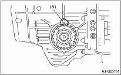

1. Using the ST, screw-in the differential side retainer until light contact is felt.
| ST 18630AA010 | WRENCH COMPL RETAINER |
NOTE:
• Screw-in the RH side slightly deeper than the LH side.
• WRENCH ASSEMBLY (499787000) can also be used.
2. Remove the oil pump housing.
3. Remove the liquid gasket from the mating surface completely.
4. Install the oil pump housing assembly to the converter case, and secure them by tightening the four bolts evenly.
NOTE:
Use an old gasket or aluminum washer to prevent damaging the mating surface of the housing.
Tightening torque:
41 N·m (4.2 kgf-m, 30.4 ft-lb)

5. Rotate the drive pinion a few times using ST1 and ST2.
| ST1 498937110 | HOLDER |
| ST2 499787700 | WRENCH |

6. Tighten the differential side retainer LH until contact is felt while rotating the shaft. Then loosen the differential side retainer RH. Keep tightening the differential side retainer LH, and loosening the retainer RH until the pinion shaft no longer turns. This is the “zero” state.
|
(A) |
Differential side retainer |
7. After the “zero” state is established, loosen the differential side retainer LH by 3 notches and secure it with the lock plate. Then loosen the differential side retainer RH and retighten until it stops. Rotate the drive pinion 2 or 3 times. Tighten the differential side retainer RH 1-3/4 notches further. This sets the preload. Finally, secure the differential side retainer with the lock plate.

|
(A) |
Lock plate |
NOTE:
Turning the differential side retainer by one notch changes the backlash about 0.05 mm (0.0020 in).
8. Turn the drive pinion a few times with ST1 and check to see if the backlash is within the specified value, using ST2, ST3, ST4 and ST5.
| ST1 499787700 | WRENCH |
| ST2 498247001 | MAGNET BASE |
| ST3 498247100 | DIAL GAUGE |
| ST4 499787500 | ADAPTER |
| ST5 498255400 | PLATE |
Backlash:
0.13 — 0.18 mm (0.0051 — 0.0071 in)
9. Adjust the teeth contact of the front differential and drive shaft.